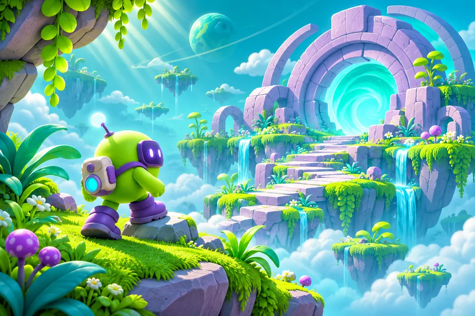

سکوبازی اکتشافی
مدار عجیب
با کاوشگری کوچک و چکمههایی خیلی بزرگ از جزیرهای شناور به جزیرهٔ بعدی بپرید. هر سیاره جاذبهٔ خودش را دارد. گیاهان به پرشهای شما واکنش نشان میدهند و گاهی یک مسیر فرعی به جایی کاملاً تازه میرسد.

استودیوی مستقل بازیسازی
برای بازیکنهای کنجکاو دنیاهای رنگارنگ میسازیم، با شیوههای تازهٔ بازی و غافلگیریهایی در هر گوشه.
طراحی بازی، جهانسازی، توسعهٔ بصری، بازیهای مستقل
ایدههای بازی
چند ایده که خودمان هم دلمان میخواهد بازیشان کنیم، از سیارههای کوچک و عجیب تا پیستهایی که جاذبه را به بازی میگیرند.

سکوبازی اکتشافی
با کاوشگری کوچک و چکمههایی خیلی بزرگ از جزیرهای شناور به جزیرهٔ بعدی بپرید. هر سیاره جاذبهٔ خودش را دارد. گیاهان به پرشهای شما واکنش نشان میدهند و گاهی یک مسیر فرعی به جایی کاملاً تازه میرسد.

مسابقهای آرکید
با یک خودروی ضدجاذبه از پیچهای تند بگذرید و با هر دریفت دقیق، شتاب اضافه بگیرید. در پیست بالایی سرعت بگیرید یا از کوچههای شهر میانبرهای پرریسک پیدا کنید.

ماجراجویی معمایی
آخرین اخگر را از میان جنگلی پر از خرابههای خاموش عبور دهید. رنگ نور فانوس را عوض کنید تا گیاهان مختلف بیدار شوند و راههایی را به هم وصل کنید که با جابهجایی نور ناپدید میشوند.
استودیو
ونین گیمز استودیوی مستقل بازیسازی است. از یک ایدهٔ کوچک شروع میکنیم که بازی کردنش لذت دارد و دورش یک دنیا میسازیم. رنگ، حرکت و لذتِ غافلگیر شدن به کارهایمان شکل میدهند.
دربارهٔ استودیو
ارتباط با ما
پروژهای در ذهن دارید؟ برایمان بنویسید دوست دارید چه چیزی بسازید.
تماس با ما